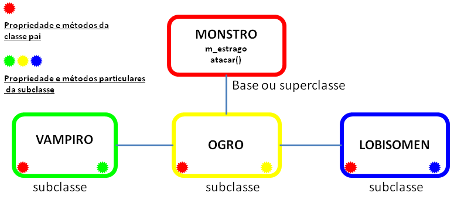
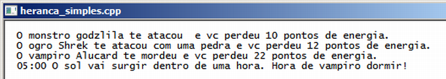

Gameprog - Escola de programação de jogos digitais
Contato: gameprog.br@gmail.com
track12.html
| index | << | >> |
12.Classes 3/5 - classes derivadas
12.1 Visão geral  Você pode criar classes derivadas de outras classes. O diagrama acima ilustra as relações e as consequências resultantes de uma herança simples, isto é, uma subclasse que é derivada de apenas uma superclasse e herda dela as propriedades e os métodos. No exemplo acima todas as subclasses ou classes filhas possuem automaticamente o método atacar() e a propriedade m_estrago definidas na superclasse monstro. O construtor de cada subclasse pode reconfigurar diferentemente as propriedades herdadas e pode redefinir os métodos para que eles tenham o comportamento particular condizente com a natureza da subclasse. Se a s propriedades não forem reconfiguradas e se os métodos não forem redefinidos, eles terão os valores e os comportamentos exatamente como foram definidos na superclasse. Ao lado dos recursos herdados, a subsclasse pode desenvolver individualmente propriedades e método exclusivos a ela. Veja nosso exemplo:  Em nosso programa, que emite a saída acima, definimos uma classe Monstro ( a classe base) e derivamos duas subclasses dela: Ogro e Vampiro. As duas subclasses herdam a propriedade m_estrago e o método atacar() da classe base. Implementamos na subclasse Vampiro o método exclusivo dormir().// Heranca_simples.cpp // Este programa ilustra a herança de classes #include <iostream> #include <string> using namespace std; // ------------------ Classe monstro ----------------------------------------- class Monstro { public: int m_estrago; string m_nome; Monstro(string snome="'monstro'",int estrago=10): m_nome(snome), m_estrago(estrago){} void atacar() { cout << " O monstro " << m_nome << " te atacou e vc perdeu "; cout << m_estrago << " pontos de energia. \n"; } // fim do metodo atacar() }; // fim da classe monstro // ------------------ Classe Ogro derivada da classe monstro ----------------- class Ogro: public Monstro { public: Ogro(string snome = "ogro", int estrago=12): Monstro(snome, estrago) {} void atacar() { cout << " O ogro " << m_nome << " te atacou com uma pedra e vc perdeu "; cout << m_estrago << " pontos de energia. \n"; } // fim do metodo atacar() }; // fim da classe ogro // ------------------ Classe Vampiro derivada da classe monstro ----------------- class Vampiro: public Monstro { public: Vampiro(string snome = "vampiro", int estrago=22) { m_nome = snome; m_estrago = estrago; } void atacar() { cout << " O vampiro " << m_nome << " te mordeu e vc perdeu "; cout << m_estrago << " pontos de energia. \n"; } // fim do metodo atacar() void dormir() { cout << " 05:00 O sol vai surgir dentro de uma hora. Hora de vampiro dormir!"; cout << "\n"; } // fim do metodo dormir() /span>}; // fim da classe vampiro // protótipo das nossas funções básicas void inicio(); void fim(); // --------------- Nosso função principal comeca aqui... int main() { inicio(); Monstro godzila("godzila"); Ogro shrek("Shrek"); Vampiro alucard("Alucard"); godzila.atacar(); shrek.atacar(); alucard.atacar(); alucard.dormir(); fim(); } // endmain void inicio() { system("title heranca_simples.cpp"); system("color f0"); cout << "\n"; } // endfunction: inicio() void fim() { cout << endl; system("pause"); } // endfunction: fim()12.2 Tipo de herança - public ou private class Ogro: public Monstro { // código da classe }; Esta é a sintaxe de derivação de classes, depois do nome da subclasse é colocado dois pontos ( : ), o tipo de herança (public) e o nome da classe base (Monstro). O tipo de herança pode ser public ou private. No tipo public todos os métodos e propriedades conservam o tipo acesso da classe base, isto é, quem for public continua public, quem for private continua private. No tipo de herança private, todos os métodos e propriedades se tornam private na subclasse. Vamos lembrar que tudo que for public pode ser acessado em qualquer parte do programa. Métodos e propriedades private podem ser acessados apenas de dentro da classe aonde foram definidos ou por funções friend (amiga) da classe. Vamos ver posteriormente o tipo de função friend, entretanto adiantamos que são funções que obtém acesso a propriedades e métodos private de uma classe. Ogro(string snome = "ogro", int estrago=12): Monstro(snome, estrago) {} Na lista de inicialização do construtor da subclasse você pode chamar o contrutor da classe base e passar variáveis para serem inicializadas. void atacar() { cout << " O vampiro " << m_nome << " te mordeu e vc perdeu "; cout << m_estrago << " pontos de energia. \n"; } // fim do metodo atacar() Não é necessário nenhuma sintaxe especial para redefinir os métodos existentes na classe base. Aqui o método atacar() foi redefinido na subclasse Vampiro; caso não tivesse sido, ele rodaria exatamente como foi definido na classe Monstro. 12.2 Introdução a classes virtuais A criação de array de objetos torna muito prático e confortável a manipulação de muitos objetos. Por exemplo, utilizando as classes acima definidas poderíamos criar uma lista de 100 vampiros e uma lista de 100 ogros e fazê-los atacar de uma só vez. Vampiro lista_vampiros[100]; Ogro lista_ogro[100]; for (int ncx = 0; ncx < 100; ncx++) { lista_ogro[ncx].atacar(); lista_vampiros[ncx].atacar(); } // endfor No bloco acima criamos separadamente uma lista de ogros e vampiros. Sabemos que essas duas classes são derivadas da classe base Monstro. Se você tivesse 100 tipos de montros, aquele bloco de código acima ficaria imenso. A sintaxe de classe virtual permite que você aliste numa array de monstros vampiros e ogros e outros tipos de monstros que vc definir, em palavras mais técnicas, você consegue referenciar numa array de objetos da classe base todos os tipos de objetos das subclasses. Quando você chamar o método atacar() dessa lista de objetos Monstros, se esse objeto for um vampiro ele atacará do jeito particular de vampiro, se for um ogro atacará do jeito ogro de ser e tudo isso você conseguirá fazer em poucas linhas dentro de um loop for() ou while(). Quando você define arrays de objetos no seu programa o compilador pré-reserva a totalidade de memória que estes objetos vão ocupar e esta memória fica atrelada ao seu programa até ele sair do ar. Se durante o seu programa você utilizar menos memória do que a reservada então haverá desperdício de recursos do sistema. Na situação inversa, se você precisar de mais memória você não poderá aumentar o tamanho da sua array. Então em um cenário ideal você vai alocar dinamicamente a quantidade de memória que você necessitar e vai liberar essa memória ao sistema assim que você terminar o uso dela. Você utilizará memória dinâmica em conjunto com classes virtuais. Abaixo mostramos uma programa com um resultado indesejável de uma situação que necessitaria o uso de classes virtuais para ser corrigida: Os ogros e vampiros definidos executam o método genérico atacar() da classe base:// Criando uma lista de ponteiros para objetos monstros Monstro *ptr_monstros[3]; // Inicializando os ponteiros para monstros com ogros e vampiros ptr_monstros[0] = new Ogro; ptr_monstros[1] = new Ogro; ptr_monstros[2] = new Vampiro; ptr_monstros[3] = new Vampiro; // Atacando o jogador com vampiros e monstros! cout << "\n--- Parte 02: vampiros e ogros via ponteiros -------------- \n"; for (int ncx =0; ncx < 4; ncx++) ptr_monstros[ncx]->atacar(); // Liberando a memória dinâmica para o sistema delete[] ptr_monstros; Esse bloco de código está plenamente correto. Ele não produz o resultado correto porque a classe não está definida como virtual. Vamos ver como corrigir essa situação no próximo capítulo. 12.3 Membros estáticos static int nobj; Com muita frequência vai haver a necessidade de realizarmos a contagem ou o controle de criação de objetos. Essa contagem é feita através do uso de membros estáticos que devem ser definidos na sintaxe mostrada no código acima. Esse membro vai ser uma propriedade única da classe e não vai se tornar particular de nenhum objeto criado embora todos os objetos possam acessá-lo. O valor inicial dessa propriedade deve ser inicializada fora da classe dessa forma: int Monstro::nobj = 1; O acesso pode ser feito utilizando o nome da classe ou utilizando o nome de qualquer objeto: nqtd = Monstro::nobj // acesso pelo nome da classe nqtd = lista_ogro[1].nobj // acesso pelo nome de qualquer objeto Você também pode definir a propriedade estática como private e assim para prover acesso a ela você deve definir funções de acesso. Estas funções também podem ser definidas como static e assim elas serão únicas para a classe tal como as propriedades definidas dessa forma.// lista_monstros.cpp // Este programa ilustra array de objetos #include <iostream> using namespace std; // ------------------ Classe monstro ----------------------------------------- class Monstro { public: int m_estrago; int m_id; static int nobj; Monstro(int estrago=10): m_estrago(estrago) { m_id = nobj; nobj++; } void atacar() { cout << " O monstro #" << m_id << " te atacou e vc perdeu "; cout << m_estrago << " pontos de energia. \n"; } // fim do método atacar() }; // fim da classe monstro // inicialização da propriedade estática int Monstro::nobj = 1; // ------------------ Classe Ogro derivada da classe monstro ----------------- class Ogro: public Monstro { public: // construtor Ogro(int estrago=12): Monstro(estrago) { } void atacar() { cout << " O ogro #" << m_id << " te atacou com uma pedra e vc perdeu "; cout << m_estrago << " pontos de energia. \n"; } // fim do método atacar() }; // fim da classe ogro // ------------------ Classe Vampiro derivada da classe monstro ----------------- class Vampiro: public Monstro { public: // construtor Vampiro(int estrago=22) { m_estrago = estrago; } void atacar() { cout << " O vampiro #" << m_id << " te mordeu e vc perdeu "; cout << m_estrago << " pontos de energia. \n"; } // fim do método atacar() }; // fim da classe vampiro // prototipo das nossas funções básicas void inicio(); void fim(); // --------------- Nossa função principal começa aqui... int main() { inicio(); Monstro *ptr_monstros[3]; Vampiro lista_vampiros[3]; Ogro lista_ogro[3]; ptr_monstros[0] = new Ogro; ptr_monstros[1] = new Ogro; ptr_monstros[2] = new Vampiro; ptr_monstros[3] = new Vampiro; cout << "--- Parte 01: vampiros e ogros via array -------------- \n"; for (int ncx =0; ncx < 3; ncx++) lista_vampiros[ncx].atacar(); for (int ncx =0; ncx < 3; ncx++) lista_ogro[ncx].atacar(); cout << "\n--- Parte 02: vampiros e ogros via ponteiros -------------- \n"; for (int ncx =0; ncx < 4; ncx++) ptr_monstros[ncx]->atacar(); cout << "\n --- Parte 03: Contagem de objetos -------------- \n"; cout << " quantidade de monstros: " << Monstro::nobj-1 << "\n"; cout << " quantidade de monstros: " << lista_ogro[1].nobj-1 << "\n"; delete[] ptr_monstros; fim(); } // endmain // -------------------------- funções ---------------------------------------- void inicio() { system("title array de objetos.cpp"); system("color f0"); cout << "\n"; } // endfunction: inicio() void fim() { cout << endl; system("pause"); } // endfunction: fim()
| index | << | >> |
Produzido por Gameprog: Jair Pereira - Fev/2006 - Junho/2013 © gameprog.br@gmail.com http://www.gameprog.com.br